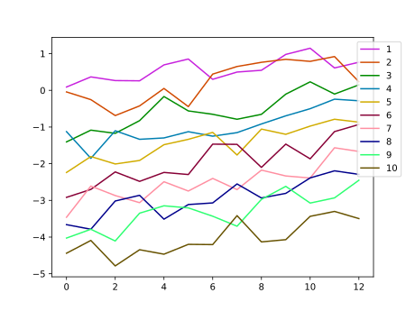

Colormaps and Colorscales
Color interpolation
Generating a range of colors
The range() function has a method that accepts colors:
Base.range(start::T; stop::T, length=100) where T<:ColorantThis generates N (=length) colors in a linearly interpolated ramp from start to stop, inclusive, returning an Array of colors.
julia> using Colors
julia> c1 = colorant"red"
RGB{N0f8}(1.0,0.0,0.0)
julia> c2 = colorant"green"
RGB{N0f8}(0.0,0.502,0.0)
julia> range(c1, stop=c2, length=15)
15-element Array{RGB{N0f8},1} with eltype RGB{FixedPointNumbers.N0f8}:
RGB{N0f8}(1.0,0.0,0.0)
RGB{N0f8}(0.929,0.035,0.0)
RGB{N0f8}(0.859,0.071,0.0)
RGB{N0f8}(0.784,0.106,0.0)
RGB{N0f8}(0.714,0.145,0.0)
RGB{N0f8}(0.643,0.18,0.0)
RGB{N0f8}(0.573,0.216,0.0)
RGB{N0f8}(0.502,0.251,0.0)
RGB{N0f8}(0.427,0.286,0.0)
RGB{N0f8}(0.357,0.322,0.0)
RGB{N0f8}(0.286,0.357,0.0)
RGB{N0f8}(0.216,0.396,0.0)
RGB{N0f8}(0.141,0.431,0.0)
RGB{N0f8}(0.071,0.467,0.0)
RGB{N0f8}(0.0,0.502,0.0)If you use Julia through Juno or IJulia, you can get the following color swatches.
range(colorant"red", stop=colorant"green", length=15)![](data:image/svg+xml;utf-8,<?xml version="1.0" encoding="UTF-8"?>
<!DOCTYPE svg PUBLIC "-//W3C//DTD SVG 1.1//EN"
"http://www.w3.org/Graphics/SVG/1.1/DTD/svg11.dtd">
<svg xmlns="http://www.w3.org/2000/svg" version="1.1"
width="180mm" height="25mm"
viewBox="0 0 15 1" preserveAspectRatio="none"
shape-rendering="crispEdges" stroke="none">
<rect width=".92" height=".96" x="0" y="0" fill="%23FF0000" />
<rect width=".92" height=".96" x="1" y="0" fill="%23ED0900" />
<rect width=".92" height=".96" x="2" y="0" fill="%23DB1200" />
<rect width=".92" height=".96" x="3" y="0" fill="%23C81B00" />
<rect width=".92" height=".96" x="4" y="0" fill="%23B62500" />
<rect width=".92" height=".96" x="5" y="0" fill="%23A42E00" />
<rect width=".92" height=".96" x="6" y="0" fill="%23923700" />
<rect width=".92" height=".96" x="7" y="0" fill="%23804000" />
<rect width=".92" height=".96" x="8" y="0" fill="%236D4900" />
<rect width=".92" height=".96" x="9" y="0" fill="%235B5200" />
<rect width=".92" height=".96" x="10" y="0" fill="%23495B00" />
<rect width=".92" height=".96" x="11" y="0" fill="%23376500" />
<rect width=".92" height=".96" x="12" y="0" fill="%23246E00" />
<rect width=".92" height=".96" x="13" y="0" fill="%23127700" />
<rect width=".92" height=".96" x="14" y="0" fill="%23008000" />
</svg>)
The intermediate colors depend on their colorspace. For example:
range(HSL(colorant"red"), stop=HSL(colorant"green"), length=15)![](data:image/svg+xml;utf-8,<?xml version="1.0" encoding="UTF-8"?>
<!DOCTYPE svg PUBLIC "-//W3C//DTD SVG 1.1//EN"
"http://www.w3.org/Graphics/SVG/1.1/DTD/svg11.dtd">
<svg xmlns="http://www.w3.org/2000/svg" version="1.1"
width="180mm" height="25mm"
viewBox="0 0 15 1" preserveAspectRatio="none"
shape-rendering="crispEdges" stroke="none">
<rect width=".92" height=".96" x="0" y="0" fill="%23FF0000" />
<rect width=".92" height=".96" x="1" y="0" fill="%23F62300" />
<rect width=".92" height=".96" x="2" y="0" fill="%23ED4400" />
<rect width=".92" height=".96" x="3" y="0" fill="%23E46200" />
<rect width=".92" height=".96" x="4" y="0" fill="%23DB7D00" />
<rect width=".92" height=".96" x="5" y="0" fill="%23D29600" />
<rect width=".92" height=".96" x="6" y="0" fill="%23C9AC00" />
<rect width=".92" height=".96" x="7" y="0" fill="%23C0C000" />
<rect width=".92" height=".96" x="8" y="0" fill="%239CB600" />
<rect width=".92" height=".96" x="9" y="0" fill="%237CAD00" />
<rect width=".92" height=".96" x="10" y="0" fill="%235EA400" />
<rect width=".92" height=".96" x="11" y="0" fill="%23439B00" />
<rect width=".92" height=".96" x="12" y="0" fill="%232A9200" />
<rect width=".92" height=".96" x="13" y="0" fill="%23148900" />
<rect width=".92" height=".96" x="14" y="0" fill="%23008000" />
</svg>)
The range and weighted_color_mean described below support colors with hues which are out of the range [0, 360]. The hues of generated colors are normalized into [0, 360].
range(HSV(0,1,1), stop=HSV(-360,1,1), length=90) # inverse rotation![](data:image/svg+xml;utf-8,<?xml version="1.0" encoding="UTF-8"?>
<!DOCTYPE svg PUBLIC "-//W3C//DTD SVG 1.1//EN"
"http://www.w3.org/Graphics/SVG/1.1/DTD/svg11.dtd">
<svg xmlns="http://www.w3.org/2000/svg" version="1.1"
width="180mm" height="25mm"
viewBox="0 0 90 1" preserveAspectRatio="none"
shape-rendering="crispEdges" stroke="none">
<rect width="1" height=".96" x="0" y="0" fill="%23FF0000" />
<rect width="1" height=".96" x="1" y="0" fill="%23FF0011" />
<rect width="1" height=".96" x="2" y="0" fill="%23FF0022" />
<rect width="1" height=".96" x="3" y="0" fill="%23FF0034" />
<rect width="1" height=".96" x="4" y="0" fill="%23FF0045" />
<rect width="1" height=".96" x="5" y="0" fill="%23FF0056" />
<rect width="1" height=".96" x="6" y="0" fill="%23FF0067" />
<rect width="1" height=".96" x="7" y="0" fill="%23FF0078" />
<rect width="1" height=".96" x="8" y="0" fill="%23FF008A" />
<rect width="1" height=".96" x="9" y="0" fill="%23FF009B" />
<rect width="1" height=".96" x="10" y="0" fill="%23FF00AC" />
<rect width="1" height=".96" x="11" y="0" fill="%23FF00BD" />
<rect width="1" height=".96" x="12" y="0" fill="%23FF00CE" />
<rect width="1" height=".96" x="13" y="0" fill="%23FF00DF" />
<rect width="1" height=".96" x="14" y="0" fill="%23FF00F1" />
<rect width="1" height=".96" x="15" y="0" fill="%23FC00FF" />
<rect width="1" height=".96" x="16" y="0" fill="%23EB00FF" />
<rect width="1" height=".96" x="17" y="0" fill="%23DA00FF" />
<rect width="1" height=".96" x="18" y="0" fill="%23C900FF" />
<rect width="1" height=".96" x="19" y="0" fill="%23B700FF" />
<rect width="1" height=".96" x="20" y="0" fill="%23A600FF" />
<rect width="1" height=".96" x="21" y="0" fill="%239500FF" />
<rect width="1" height=".96" x="22" y="0" fill="%238400FF" />
<rect width="1" height=".96" x="23" y="0" fill="%237300FF" />
<rect width="1" height=".96" x="24" y="0" fill="%236100FF" />
<rect width="1" height=".96" x="25" y="0" fill="%235000FF" />
<rect width="1" height=".96" x="26" y="0" fill="%233F00FF" />
<rect width="1" height=".96" x="27" y="0" fill="%232E00FF" />
<rect width="1" height=".96" x="28" y="0" fill="%231D00FF" />
<rect width="1" height=".96" x="29" y="0" fill="%230B00FF" />
<rect width="1" height=".96" x="30" y="0" fill="%230006FF" />
<rect width="1" height=".96" x="31" y="0" fill="%230017FF" />
<rect width="1" height=".96" x="32" y="0" fill="%230028FF" />
<rect width="1" height=".96" x="33" y="0" fill="%230039FF" />
<rect width="1" height=".96" x="34" y="0" fill="%23004AFF" />
<rect width="1" height=".96" x="35" y="0" fill="%23005CFF" />
<rect width="1" height=".96" x="36" y="0" fill="%23006DFF" />
<rect width="1" height=".96" x="37" y="0" fill="%23007EFF" />
<rect width="1" height=".96" x="38" y="0" fill="%23008FFF" />
<rect width="1" height=".96" x="39" y="0" fill="%2300A0FF" />
<rect width="1" height=".96" x="40" y="0" fill="%2300B2FF" />
<rect width="1" height=".96" x="41" y="0" fill="%2300C3FF" />
<rect width="1" height=".96" x="42" y="0" fill="%2300D4FF" />
<rect width="1" height=".96" x="43" y="0" fill="%2300E5FF" />
<rect width="1" height=".96" x="44" y="0" fill="%2300F6FF" />
<rect width="1" height=".96" x="45" y="0" fill="%2300FFF6" />
<rect width="1" height=".96" x="46" y="0" fill="%2300FFE5" />
<rect width="1" height=".96" x="47" y="0" fill="%2300FFD4" />
<rect width="1" height=".96" x="48" y="0" fill="%2300FFC3" />
<rect width="1" height=".96" x="49" y="0" fill="%2300FFB2" />
<rect width="1" height=".96" x="50" y="0" fill="%2300FFA0" />
<rect width="1" height=".96" x="51" y="0" fill="%2300FF8F" />
<rect width="1" height=".96" x="52" y="0" fill="%2300FF7E" />
<rect width="1" height=".96" x="53" y="0" fill="%2300FF6D" />
<rect width="1" height=".96" x="54" y="0" fill="%2300FF5C" />
<rect width="1" height=".96" x="55" y="0" fill="%2300FF4A" />
<rect width="1" height=".96" x="56" y="0" fill="%2300FF39" />
<rect width="1" height=".96" x="57" y="0" fill="%2300FF28" />
<rect width="1" height=".96" x="58" y="0" fill="%2300FF17" />
<rect width="1" height=".96" x="59" y="0" fill="%2300FF06" />
<rect width="1" height=".96" x="60" y="0" fill="%230BFF00" />
<rect width="1" height=".96" x="61" y="0" fill="%231DFF00" />
<rect width="1" height=".96" x="62" y="0" fill="%232EFF00" />
<rect width="1" height=".96" x="63" y="0" fill="%233FFF00" />
<rect width="1" height=".96" x="64" y="0" fill="%2350FF00" />
<rect width="1" height=".96" x="65" y="0" fill="%2361FF00" />
<rect width="1" height=".96" x="66" y="0" fill="%2373FF00" />
<rect width="1" height=".96" x="67" y="0" fill="%2384FF00" />
<rect width="1" height=".96" x="68" y="0" fill="%2395FF00" />
<rect width="1" height=".96" x="69" y="0" fill="%23A6FF00" />
<rect width="1" height=".96" x="70" y="0" fill="%23B7FF00" />
<rect width="1" height=".96" x="71" y="0" fill="%23C9FF00" />
<rect width="1" height=".96" x="72" y="0" fill="%23DAFF00" />
<rect width="1" height=".96" x="73" y="0" fill="%23EBFF00" />
<rect width="1" height=".96" x="74" y="0" fill="%23FCFF00" />
<rect width="1" height=".96" x="75" y="0" fill="%23FFF100" />
<rect width="1" height=".96" x="76" y="0" fill="%23FFDF00" />
<rect width="1" height=".96" x="77" y="0" fill="%23FFCE00" />
<rect width="1" height=".96" x="78" y="0" fill="%23FFBD00" />
<rect width="1" height=".96" x="79" y="0" fill="%23FFAC00" />
<rect width="1" height=".96" x="80" y="0" fill="%23FF9B00" />
<rect width="1" height=".96" x="81" y="0" fill="%23FF8A00" />
<rect width="1" height=".96" x="82" y="0" fill="%23FF7800" />
<rect width="1" height=".96" x="83" y="0" fill="%23FF6700" />
<rect width="1" height=".96" x="84" y="0" fill="%23FF5600" />
<rect width="1" height=".96" x="85" y="0" fill="%23FF4500" />
<rect width="1" height=".96" x="86" y="0" fill="%23FF3400" />
<rect width="1" height=".96" x="87" y="0" fill="%23FF2200" />
<rect width="1" height=".96" x="88" y="0" fill="%23FF1100" />
<rect width="1" height=".96" x="89" y="0" fill="%23FF0000" />
</svg>)
range(LCHab(70,70,0), stop=LCHab(70,70,720), length=90) # multiple rotations![](data:image/svg+xml;utf-8,<?xml version="1.0" encoding="UTF-8"?>
<!DOCTYPE svg PUBLIC "-//W3C//DTD SVG 1.1//EN"
"http://www.w3.org/Graphics/SVG/1.1/DTD/svg11.dtd">
<svg xmlns="http://www.w3.org/2000/svg" version="1.1"
width="180mm" height="25mm"
viewBox="0 0 90 1" preserveAspectRatio="none"
shape-rendering="crispEdges" stroke="none">
<rect width="1" height=".96" x="0" y="0" fill="%23FF6DAE" />
<rect width="1" height=".96" x="1" y="0" fill="%23FF6D9C" />
<rect width="1" height=".96" x="2" y="0" fill="%23FF6F8B" />
<rect width="1" height=".96" x="3" y="0" fill="%23FF727B" />
<rect width="1" height=".96" x="4" y="0" fill="%23FF786B" />
<rect width="1" height=".96" x="5" y="0" fill="%23FF7E5B" />
<rect width="1" height=".96" x="6" y="0" fill="%23FF854D" />
<rect width="1" height=".96" x="7" y="0" fill="%23FF8C3F" />
<rect width="1" height=".96" x="8" y="0" fill="%23F59432" />
<rect width="1" height=".96" x="9" y="0" fill="%23E99B27" />
<rect width="1" height=".96" x="10" y="0" fill="%23DBA11C" />
<rect width="1" height=".96" x="11" y="0" fill="%23CDA715" />
<rect width="1" height=".96" x="12" y="0" fill="%23BDAD15" />
<rect width="1" height=".96" x="13" y="0" fill="%23ADB21B" />
<rect width="1" height=".96" x="14" y="0" fill="%239BB626" />
<rect width="1" height=".96" x="15" y="0" fill="%2388BA32" />
<rect width="1" height=".96" x="16" y="0" fill="%2373BE40" />
<rect width="1" height=".96" x="17" y="0" fill="%235BC14F" />
<rect width="1" height=".96" x="18" y="0" fill="%2339C35F" />
<rect width="1" height=".96" x="19" y="0" fill="%2300C570" />
<rect width="1" height=".96" x="20" y="0" fill="%2300C781" />
<rect width="1" height=".96" x="21" y="0" fill="%2300C893" />
<rect width="1" height=".96" x="22" y="0" fill="%2300C9A5" />
<rect width="1" height=".96" x="23" y="0" fill="%2300C9B7" />
<rect width="1" height=".96" x="24" y="0" fill="%2300C9C8" />
<rect width="1" height=".96" x="25" y="0" fill="%2300C9D9" />
<rect width="1" height=".96" x="26" y="0" fill="%2300C8EA" />
<rect width="1" height=".96" x="27" y="0" fill="%2300C7F9" />
<rect width="1" height=".96" x="28" y="0" fill="%2300C6FF" />
<rect width="1" height=".96" x="29" y="0" fill="%2300C3FF" />
<rect width="1" height=".96" x="30" y="0" fill="%2300C1FF" />
<rect width="1" height=".96" x="31" y="0" fill="%2300BDFF" />
<rect width="1" height=".96" x="32" y="0" fill="%2300B9FF" />
<rect width="1" height=".96" x="33" y="0" fill="%2300B4FF" />
<rect width="1" height=".96" x="34" y="0" fill="%2300AFFF" />
<rect width="1" height=".96" x="35" y="0" fill="%235DA9FF" />
<rect width="1" height=".96" x="36" y="0" fill="%2387A2FF" />
<rect width="1" height=".96" x="37" y="0" fill="%23A79BFF" />
<rect width="1" height=".96" x="38" y="0" fill="%23C293FF" />
<rect width="1" height=".96" x="39" y="0" fill="%23D88BFF" />
<rect width="1" height=".96" x="40" y="0" fill="%23EB84F7" />
<rect width="1" height=".96" x="41" y="0" fill="%23FA7CE9" />
<rect width="1" height=".96" x="42" y="0" fill="%23FF76D9" />
<rect width="1" height=".96" x="43" y="0" fill="%23FF71C8" />
<rect width="1" height=".96" x="44" y="0" fill="%23FF6EB6" />
<rect width="1" height=".96" x="45" y="0" fill="%23FF6CA5" />
<rect width="1" height=".96" x="46" y="0" fill="%23FF6D94" />
<rect width="1" height=".96" x="47" y="0" fill="%23FF7083" />
<rect width="1" height=".96" x="48" y="0" fill="%23FF7573" />
<rect width="1" height=".96" x="49" y="0" fill="%23FF7B63" />
<rect width="1" height=".96" x="50" y="0" fill="%23FF8254" />
<rect width="1" height=".96" x="51" y="0" fill="%23FF8946" />
<rect width="1" height=".96" x="52" y="0" fill="%23FB9039" />
<rect width="1" height=".96" x="53" y="0" fill="%23EF972C" />
<rect width="1" height=".96" x="54" y="0" fill="%23E29E21" />
<rect width="1" height=".96" x="55" y="0" fill="%23D4A418" />
<rect width="1" height=".96" x="56" y="0" fill="%23C5AA14" />
<rect width="1" height=".96" x="57" y="0" fill="%23B5B017" />
<rect width="1" height=".96" x="58" y="0" fill="%23A4B420" />
<rect width="1" height=".96" x="59" y="0" fill="%2392B82C" />
<rect width="1" height=".96" x="60" y="0" fill="%237EBC39" />
<rect width="1" height=".96" x="61" y="0" fill="%2368BF48" />
<rect width="1" height=".96" x="62" y="0" fill="%234CC257" />
<rect width="1" height=".96" x="63" y="0" fill="%231CC467" />
<rect width="1" height=".96" x="64" y="0" fill="%2300C678" />
<rect width="1" height=".96" x="65" y="0" fill="%2300C78A" />
<rect width="1" height=".96" x="66" y="0" fill="%2300C89C" />
<rect width="1" height=".96" x="67" y="0" fill="%2300C9AE" />
<rect width="1" height=".96" x="68" y="0" fill="%2300C9C0" />
<rect width="1" height=".96" x="69" y="0" fill="%2300C9D1" />
<rect width="1" height=".96" x="70" y="0" fill="%2300C9E2" />
<rect width="1" height=".96" x="71" y="0" fill="%2300C8F1" />
<rect width="1" height=".96" x="72" y="0" fill="%2300C6FF" />
<rect width="1" height=".96" x="73" y="0" fill="%2300C5FF" />
<rect width="1" height=".96" x="74" y="0" fill="%2300C2FF" />
<rect width="1" height=".96" x="75" y="0" fill="%2300BFFF" />
<rect width="1" height=".96" x="76" y="0" fill="%2300BBFF" />
<rect width="1" height=".96" x="77" y="0" fill="%2300B7FF" />
<rect width="1" height=".96" x="78" y="0" fill="%2300B2FF" />
<rect width="1" height=".96" x="79" y="0" fill="%233EACFF" />
<rect width="1" height=".96" x="80" y="0" fill="%2374A6FF" />
<rect width="1" height=".96" x="81" y="0" fill="%23989EFF" />
<rect width="1" height=".96" x="82" y="0" fill="%23B597FF" />
<rect width="1" height=".96" x="83" y="0" fill="%23CD8FFF" />
<rect width="1" height=".96" x="84" y="0" fill="%23E287FE" />
<rect width="1" height=".96" x="85" y="0" fill="%23F380F0" />
<rect width="1" height=".96" x="86" y="0" fill="%23FF79E1" />
<rect width="1" height=".96" x="87" y="0" fill="%23FF73D0" />
<rect width="1" height=".96" x="88" y="0" fill="%23FF6FBF" />
<rect width="1" height=".96" x="89" y="0" fill="%23FF6DAE" />
</svg>)
While sometimes useful in particular circumstances, typically it is recommended that the hue be within [0, 360]. See normalize_hue.
Base.range — Functionrange(start::T; stop::T, length=100) where T<:Colorant
range(start::T, stop::T; length=100) where T<:ColorantGenerates N (=length) >2 colors in a linearly interpolated ramp from start tostop, inclusive, returning an Array of colors.
stop as a positional argument requires at least Julia 1.1.
Weighted color means
The weighted_color_mean() function returns a color that is the weighted mean of c1 and c2, where c1 has a weight 0 ≤ w1 ≤ 1.
For example:
julia> weighted_color_mean(0.8, colorant"red", colorant"green")
RGB{N0f8}(0.8,0.102,0.0)You can also get the weighted mean of three or more colors by passing the collections of weights and colors. The following is an example of bilinear interpolation.
[weighted_color_mean([(1-s)*(1-t), s*(1-t), (1-s)*t, s*t], # collection of weights
Colors.JULIA_LOGO_COLORS) # collection of colors
for s = 0:0.2:1, t = 0:0.05:1]![](data:image/svg+xml;utf-8,<?xml version="1.0" encoding="UTF-8"?>
<!DOCTYPE svg PUBLIC "-//W3C//DTD SVG 1.1//EN"
"http://www.w3.org/Graphics/SVG/1.1/DTD/svg11.dtd">
<svg xmlns="http://www.w3.org/2000/svg" version="1.1"
width="180mm" height="51.43mm"
viewBox="0 0 21 6" preserveAspectRatio="none"
shape-rendering="crispEdges" stroke="none">
<rect width=".88" height=".88" x="0" y="0" fill="%23CB3C33" />
<rect width=".88" height=".88" x="1" y="0" fill="%23C43E3B" />
<rect width=".88" height=".88" x="2" y="0" fill="%23BD4044" />
<rect width=".88" height=".88" x="3" y="0" fill="%23B6424C" />
<rect width=".88" height=".88" x="4" y="0" fill="%23AF4454" />
<rect width=".88" height=".88" x="5" y="0" fill="%23A8465C" />
<rect width=".88" height=".88" x="6" y="0" fill="%23A14864" />
<rect width=".88" height=".88" x="7" y="0" fill="%239A4A6D" />
<rect width=".88" height=".88" x="8" y="0" fill="%23934C75" />
<rect width=".88" height=".88" x="9" y="0" fill="%238C4E7D" />
<rect width=".88" height=".88" x="10" y="0" fill="%23855086" />
<rect width=".88" height=".88" x="11" y="0" fill="%237F518E" />
<rect width=".88" height=".88" x="12" y="0" fill="%23785396" />
<rect width=".88" height=".88" x="13" y="0" fill="%2371559E" />
<rect width=".88" height=".88" x="14" y="0" fill="%236A57A6" />
<rect width=".88" height=".88" x="15" y="0" fill="%236359AF" />
<rect width=".88" height=".88" x="16" y="0" fill="%235C5BB7" />
<rect width=".88" height=".88" x="17" y="0" fill="%23555DBF" />
<rect width=".88" height=".88" x="18" y="0" fill="%234E5FC8" />
<rect width=".88" height=".88" x="19" y="0" fill="%234761D0" />
<rect width=".88" height=".88" x="20" y="0" fill="%234063D8" />
<rect width=".88" height=".88" x="0" y="1" fill="%23AE4E30" />
<rect width=".88" height=".88" x="1" y="1" fill="%23A94F38" />
<rect width=".88" height=".88" x="2" y="1" fill="%23A45040" />
<rect width=".88" height=".88" x="3" y="1" fill="%23A05148" />
<rect width=".88" height=".88" x="4" y="1" fill="%239B5250" />
<rect width=".88" height=".88" x="5" y="1" fill="%23965358" />
<rect width=".88" height=".88" x="6" y="1" fill="%23925460" />
<rect width=".88" height=".88" x="7" y="1" fill="%238D5568" />
<rect width=".88" height=".88" x="8" y="1" fill="%23895670" />
<rect width=".88" height=".88" x="9" y="1" fill="%23845778" />
<rect width=".88" height=".88" x="10" y="1" fill="%237F5880" />
<rect width=".88" height=".88" x="11" y="1" fill="%237B5988" />
<rect width=".88" height=".88" x="12" y="1" fill="%23765990" />
<rect width=".88" height=".88" x="13" y="1" fill="%23715A98" />
<rect width=".88" height=".88" x="14" y="1" fill="%236D5BA0" />
<rect width=".88" height=".88" x="15" y="1" fill="%23685CA8" />
<rect width=".88" height=".88" x="16" y="1" fill="%23645DB0" />
<rect width=".88" height=".88" x="17" y="1" fill="%235F5EB8" />
<rect width=".88" height=".88" x="18" y="1" fill="%235A5FC0" />
<rect width=".88" height=".88" x="19" y="1" fill="%235660C8" />
<rect width=".88" height=".88" x="20" y="1" fill="%235161D0" />
<rect width=".88" height=".88" x="0" y="2" fill="%2390612E" />
<rect width=".88" height=".88" x="1" y="2" fill="%238E6136" />
<rect width=".88" height=".88" x="2" y="2" fill="%238C613D" />
<rect width=".88" height=".88" x="3" y="2" fill="%23896045" />
<rect width=".88" height=".88" x="4" y="2" fill="%2387604D" />
<rect width=".88" height=".88" x="5" y="2" fill="%23856055" />
<rect width=".88" height=".88" x="6" y="2" fill="%2382605C" />
<rect width=".88" height=".88" x="7" y="2" fill="%23806064" />
<rect width=".88" height=".88" x="8" y="2" fill="%237E606C" />
<rect width=".88" height=".88" x="9" y="2" fill="%237B6074" />
<rect width=".88" height=".88" x="10" y="2" fill="%2379607B" />
<rect width=".88" height=".88" x="11" y="2" fill="%23776083" />
<rect width=".88" height=".88" x="12" y="2" fill="%23745F8B" />
<rect width=".88" height=".88" x="13" y="2" fill="%23725F93" />
<rect width=".88" height=".88" x="14" y="2" fill="%23705F9A" />
<rect width=".88" height=".88" x="15" y="2" fill="%236E5FA2" />
<rect width=".88" height=".88" x="16" y="2" fill="%236B5FAA" />
<rect width=".88" height=".88" x="17" y="2" fill="%23695FB2" />
<rect width=".88" height=".88" x="18" y="2" fill="%23675FB9" />
<rect width=".88" height=".88" x="19" y="2" fill="%23645FC1" />
<rect width=".88" height=".88" x="20" y="2" fill="%23625FC9" />
<rect width=".88" height=".88" x="0" y="3" fill="%2373732B" />
<rect width=".88" height=".88" x="1" y="3" fill="%23737233" />
<rect width=".88" height=".88" x="2" y="3" fill="%2373713A" />
<rect width=".88" height=".88" x="3" y="3" fill="%23737042" />
<rect width=".88" height=".88" x="4" y="3" fill="%23736F49" />
<rect width=".88" height=".88" x="5" y="3" fill="%23736E51" />
<rect width=".88" height=".88" x="6" y="3" fill="%23736C58" />
<rect width=".88" height=".88" x="7" y="3" fill="%23736B60" />
<rect width=".88" height=".88" x="8" y="3" fill="%23736A67" />
<rect width=".88" height=".88" x="9" y="3" fill="%2373696F" />
<rect width=".88" height=".88" x="10" y="3" fill="%23736876" />
<rect width=".88" height=".88" x="11" y="3" fill="%2373677E" />
<rect width=".88" height=".88" x="12" y="3" fill="%23736685" />
<rect width=".88" height=".88" x="13" y="3" fill="%2373648D" />
<rect width=".88" height=".88" x="14" y="3" fill="%23736394" />
<rect width=".88" height=".88" x="15" y="3" fill="%2373629C" />
<rect width=".88" height=".88" x="16" y="3" fill="%237361A3" />
<rect width=".88" height=".88" x="17" y="3" fill="%237360AB" />
<rect width=".88" height=".88" x="18" y="3" fill="%23735FB2" />
<rect width=".88" height=".88" x="19" y="3" fill="%23735EBA" />
<rect width=".88" height=".88" x="20" y="3" fill="%23735CC1" />
<rect width=".88" height=".88" x="0" y="4" fill="%23558629" />
<rect width=".88" height=".88" x="1" y="4" fill="%23588330" />
<rect width=".88" height=".88" x="2" y="4" fill="%235A8137" />
<rect width=".88" height=".88" x="3" y="4" fill="%235C7F3E" />
<rect width=".88" height=".88" x="4" y="4" fill="%235F7D46" />
<rect width=".88" height=".88" x="5" y="4" fill="%23617B4D" />
<rect width=".88" height=".88" x="6" y="4" fill="%23637954" />
<rect width=".88" height=".88" x="7" y="4" fill="%2366765B" />
<rect width=".88" height=".88" x="8" y="4" fill="%23687463" />
<rect width=".88" height=".88" x="9" y="4" fill="%236A726A" />
<rect width=".88" height=".88" x="10" y="4" fill="%236D7071" />
<rect width=".88" height=".88" x="11" y="4" fill="%236F6E78" />
<rect width=".88" height=".88" x="12" y="4" fill="%23716C80" />
<rect width=".88" height=".88" x="13" y="4" fill="%23746987" />
<rect width=".88" height=".88" x="14" y="4" fill="%2376678E" />
<rect width=".88" height=".88" x="15" y="4" fill="%23786595" />
<rect width=".88" height=".88" x="16" y="4" fill="%237B639D" />
<rect width=".88" height=".88" x="17" y="4" fill="%237D61A4" />
<rect width=".88" height=".88" x="18" y="4" fill="%237F5FAB" />
<rect width=".88" height=".88" x="19" y="4" fill="%23825CB2" />
<rect width=".88" height=".88" x="20" y="4" fill="%23845ABA" />
<rect width=".88" height=".88" x="0" y="5" fill="%23389826" />
<rect width=".88" height=".88" x="1" y="5" fill="%233D952D" />
<rect width=".88" height=".88" x="2" y="5" fill="%23419234" />
<rect width=".88" height=".88" x="3" y="5" fill="%23468E3B" />
<rect width=".88" height=".88" x="4" y="5" fill="%234B8B42" />
<rect width=".88" height=".88" x="5" y="5" fill="%234F8849" />
<rect width=".88" height=".88" x="6" y="5" fill="%23548550" />
<rect width=".88" height=".88" x="7" y="5" fill="%23598257" />
<rect width=".88" height=".88" x="8" y="5" fill="%235D7E5E" />
<rect width=".88" height=".88" x="9" y="5" fill="%23627B65" />
<rect width=".88" height=".88" x="10" y="5" fill="%2366786C" />
<rect width=".88" height=".88" x="11" y="5" fill="%236B7573" />
<rect width=".88" height=".88" x="12" y="5" fill="%2370727A" />
<rect width=".88" height=".88" x="13" y="5" fill="%23746E81" />
<rect width=".88" height=".88" x="14" y="5" fill="%23796B88" />
<rect width=".88" height=".88" x="15" y="5" fill="%237E688F" />
<rect width=".88" height=".88" x="16" y="5" fill="%23826596" />
<rect width=".88" height=".88" x="17" y="5" fill="%2387629D" />
<rect width=".88" height=".88" x="18" y="5" fill="%238C5EA4" />
<rect width=".88" height=".88" x="19" y="5" fill="%23905BAB" />
<rect width=".88" height=".88" x="20" y="5" fill="%239558B2" />
</svg>)
Colors.weighted_color_mean — Functionweighted_color_mean(w1, c1, c2)Returns the color w1*c1 + (1-w1)*c2 that is the weighted mean of c1 and c2, where c1 has a weight 0 ≤ w1 ≤ 1.
weighted_color_mean(weights, colors)Returns the weighted mean of the given collection colors with weights. This is semantically equivalent to the calculation of sum(weights .* colors).
Examples
julia> rgbs = (RGB(1, 0, 0), RGB(0, 1, 0), RGB(0, 0, 1));
julia> weighted_color_mean([0.2, 0.2, 0.6], rgbs)
RGB{N0f8}(0.2,0.2,0.6)
julia> weighted_color_mean(0.5:-0.25:0.0, RGB{Float64}.(rgbs))
RGB{Float64}(0.5,0.25,0.0)wighted_color_mean with collection or iterator inputs requires Colors v0.13 or later.
In a cylindrical color space such as HSV, a weighted mean of more than three colors is generally not meaningful.
Colormaps
This package provides some pre-defined colormaps (described below). There are also several other packages which provide colormaps:
Predefined sequential and diverging colormaps
The colormap() function returns a predefined sequential or diverging colormap computed using the algorithm by Wijffelaars, M., et al. (2008).
colormap(cname::String [, N::Int=100; mid=0.5, logscale=false, kvs...])
The optional arguments are:
- the number of colors
N - position of the middle point
mid - the use of logarithmic scaling with the
logscalekeyword
Colormaps computed by this algorithm are guaranteed to have an increasing perceived depth or saturation making them ideal for data visualization. This also means that they are (in most cases) color-blind friendly and suitable for black-and-white printing.
The currently supported colormap names are:
Sequential
- "Blues"
- "Greens"
- "Grays"
- "Oranges"
- "Purples"
- "Reds"
Diverging
- "RdBu" (from red to blue)
Colors.colormap — Functioncolormap(cname, N=100; mid=0.5, logscale=false, kvs...])Returns a predefined sequential or diverging colormap computed using the algorithm by Wijffelaars, M., et al. (2008).
Sequential colormaps cname choices are:
BluesGreensGraysOrangesPurples,Reds
Diverging colormap choices are RdBu.
Optionally, you can specify the number of colors N (default 100).
Extra control is provided by keyword arguments.
midsets the position of the midpoint for diverging colormaps.logscale=trueuses logarithmically-spaced steps in the colormap.
You can also use keyword argument names that match the argument names in sequential_palette or diverging_palette.
Sequential and diverging color palettes
You can create your own color palettes by using sequential_palette():
sequential_palette(h, [N::Int=100; c=0.88, s=0.6, b=0.75, w=0.15, d=0.0, wcolor=RGB(1,1,0), dcolor=RGB(0,0,1), logscale=false])
which creates a sequential map for a hue h (defined in LCHuv space).
Other possible parameters that you can fine tune are:
N- number of colorsc- the overall lightness contrast [0,1]s- saturation [0,1]b- brightness [0,1]w- cold/warm parameter, i.e. the strength of the starting color [0,1]d- depth of the ending color [0,1]wcolor- starting color (usually defined to be yellow)dcolor- ending color (depth)logscale- true/false for toggling logspacing
Two sequential maps can also be combined into a diverging colormap by using:
diverging_palette(h1, h2 [, N::Int=100; mid=0.5,c=0.88, s=0.6, b=0.75, w=0.15, d1=0.0, d2=0.0, wcolor=RGB(1,1,0), dcolor1=RGB(1,0,0), dcolor2=RGB(0,0,1), logscale=false])
where the arguments are:
h1- the main hue of the left side [0,360]h2- the main hue of the right side [0,360]
and the optional arguments are:
N- number of colorsc- the overall lightness contrast [0,1]s- saturation [0,1]b- brightness [0,1]w- cold/warm parameter, i.e. the strength of the middle color [0,1]d1- depth of the end color in the left side [0,1]d2- depth of the end color in the right side [0,1]wcolor- starting color i.e. the middle color (warmness, usually defined to be yellow)dcolor1- end color of the left side (depth)dcolor2- end color of the right side (depth)logscale- true/false for toggling logspacing
Colors.sequential_palette — Functionsequential_palette(h, N::Int=100; <keyword arguments>)Implements the color palette creation technique by Wijffelaars, M., et al. (2008).
Colormaps are formed using Bézier curves in LCHuv colorspace with some constant hue. In addition, start and end points can be given that are then blended to the original hue smoothly.
Arguments
- N - number of colors
- h - the main hue [0,360]
- c - the overall lightness contrast [0,1]
- s - saturation [0,1]
- b - brightness [0,1]
- w - cold/warm parameter, i.e. the strength of the starting color [0,1]
- d - depth of the ending color [0,1]
- wcolor - starting color (warmness)
- dcolor - ending color (depth)
- logscale - true/false for toggling logspacing
Colors.diverging_palette — Functiondiverging_palette(h1, h2, N::Int=100; <keyword arguments>)Create diverging palettes by combining 2 sequential palettes
Arguments
- N - number of colors
- h1 - the main hue of the left side [0,360]
- h2 - the main hue of the right side [0,360]
- c - the overall lightness contrast [0,1]
- s - saturation [0,1]
- b - brightness [0,1]
- w - cold/warm parameter, i.e. the strength of the starting color [0,1]
- d1 - depth of the ending color in the left side [0,1]
- d2 - depth of the ending color in the right side [0,1]
- wcolor - starting color (warmness)
- dcolor1 - ending color of the left side (depth)
- dcolor2 - ending color of the right side (depth)
- logscale - true/false for toggling logspacing
Generating distinguishable colors
distinguishable_colors() generates n maximally distinguishable colors in LCHab space. A seed color or array of seed colors can be provided, and the remaining colors will be chosen to be maximally distinguishable from the seed colors and each other.
distinguishable_colors(n::Integer, seed::Color)
distinguishable_colors{T<:Color}(n::Integer,seed::AbstractVector{T})By default, distinguishable_colors chooses maximally distinguishable colors from the outer product of lightness, chroma, and hue values specified by lchoices = range(0, stop=100, length=15), cchoices = range(0, stop=100, length=15), and hchoices = range(0, stop=342, length=20). The set of colors that distinguishable_colors chooses from can be specified by passing different choices as keyword arguments.
distinguishable_colors{T<:Color}(n::Integer, seed::AbstractVector{T};
dropseed = false,
transform::Function = identity,
lchoices::AbstractVector = range(0, stop=100, length=15),
cchoices::AbstractVector = range(0, stop=100, length=15),
hchoices::AbstractVector = range(0, stop=342, length=20)
)Distinguishability is maximized with respect to the CIEDE2000 color difference formula (see colordiff in Color Differences). If a transform function is specified, color difference is instead maximized between colors a and b according to colordiff(transform(a), transform(b)).
Color arrays generated by distinguishable_colors are particularly useful for improving the readability of multiple trace plots. Here’s an example using PyPlot:
using PyPlot, Colors
vars = 1:10
cols = distinguishable_colors(length(vars), [RGB(1,1,1), RGB(0,0,0)], dropseed=true)
pcols = map(col -> (red(col), green(col), blue(col)), cols)
xs = 0:12
for i in vars
plot(xs, map(x -> rand() + 0.1x - 0.5i, xs), c = pcols[i])
end
legend(vars, loc="upper right", bbox_to_anchor=[1.1, 1.])
To ensure that the generated colors stand out against the default white background and black texts, white and black ([RGB(1,1,1), RGB(0,0,0)]) were used as seed colors to distinguishable_colors(), then dropped from the resulting array with dropseed=true.
The distinguishable_colors returns a vector of length n regardless of the dropseed option. If dropseed is true, the leading seed colors will be dropped, and the succeeding values of length(seed) will be appended to the end.
permutedims(hcat(
distinguishable_colors(10, [RGB(1,1,1), RGB(0,0,0)], dropseed=false),
distinguishable_colors(10, [RGB(1,1,1), RGB(0,0,0)], dropseed=true),
distinguishable_colors(12, [RGB(1,1,1), RGB(0,0,0)])[3:end] # manually drop the seed colors
))![](data:image/svg+xml;utf-8,<?xml version="1.0" encoding="UTF-8"?>
<!DOCTYPE svg PUBLIC "-//W3C//DTD SVG 1.1//EN"
"http://www.w3.org/Graphics/SVG/1.1/DTD/svg11.dtd">
<svg xmlns="http://www.w3.org/2000/svg" version="1.1"
width="180mm" height="54mm"
viewBox="0 0 10 3" preserveAspectRatio="none"
shape-rendering="crispEdges" stroke="none">
<rect width=".94" height=".94" x="0" y="0" fill="%23FFFFFF" />
<rect width=".94" height=".94" x="1" y="0" fill="%23000000" />
<rect width=".94" height=".94" x="2" y="0" fill="%23C721DD" />
<rect width=".94" height=".94" x="3" y="0" fill="%23D14A00" />
<rect width=".94" height=".94" x="4" y="0" fill="%23008C00" />
<rect width=".94" height=".94" x="5" y="0" fill="%23007FB1" />
<rect width=".94" height=".94" x="6" y="0" fill="%23D1AC00" />
<rect width=".94" height=".94" x="7" y="0" fill="%23870036" />
<rect width=".94" height=".94" x="8" y="0" fill="%23FF8FA1" />
<rect width=".94" height=".94" x="9" y="0" fill="%2300008B" />
<rect width=".94" height=".94" x="0" y="1" fill="%23C721DD" />
<rect width=".94" height=".94" x="1" y="1" fill="%23D14A00" />
<rect width=".94" height=".94" x="2" y="1" fill="%23008C00" />
<rect width=".94" height=".94" x="3" y="1" fill="%23007FB1" />
<rect width=".94" height=".94" x="4" y="1" fill="%23D1AC00" />
<rect width=".94" height=".94" x="5" y="1" fill="%23870036" />
<rect width=".94" height=".94" x="6" y="1" fill="%23FF8FA1" />
<rect width=".94" height=".94" x="7" y="1" fill="%2300008B" />
<rect width=".94" height=".94" x="8" y="1" fill="%232EFF71" />
<rect width=".94" height=".94" x="9" y="1" fill="%23675200" />
<rect width=".94" height=".94" x="0" y="2" fill="%23C721DD" />
<rect width=".94" height=".94" x="1" y="2" fill="%23D14A00" />
<rect width=".94" height=".94" x="2" y="2" fill="%23008C00" />
<rect width=".94" height=".94" x="3" y="2" fill="%23007FB1" />
<rect width=".94" height=".94" x="4" y="2" fill="%23D1AC00" />
<rect width=".94" height=".94" x="5" y="2" fill="%23870036" />
<rect width=".94" height=".94" x="6" y="2" fill="%23FF8FA1" />
<rect width=".94" height=".94" x="7" y="2" fill="%2300008B" />
<rect width=".94" height=".94" x="8" y="2" fill="%232EFF71" />
<rect width=".94" height=".94" x="9" y="2" fill="%23675200" />
</svg>)
dropseed requires at least Colors v0.10. If you use an older version, drop the seed manually.
Colors.distinguishable_colors — Functioncolors = distinguishable_colors(n, seed=RGB{N0f8}[];
dropseed=false,
transform=identity,
lchoices=range(0, stop=100, length=15),
cchoices=range(0, stop=100, length=15),
hchoices=range(0, stop=342, length=20))Generate n maximally distinguishable colors.
This uses a greedy brute-force approach to choose n colors that are maximally distinguishable. Given seed color(s), and a set of possible hue, chroma, and lightness values (in LCHab space), it repeatedly chooses the next color as the one that maximizes the minimum pairwise distance to any of the colors already in the palette.
Arguments
n: Number of colors to generate.seed: Initial color(s) included in the palette.
Keyword arguments
dropseed: if true, theseedvalues will be dropped. This provides an easy mechanism to ensure that the chosen colors are distinguishable from the seed value(s). When true,ndoes not include the seed color(s).transform: Transform applied to colors before measuring distance. Default isidentity; other choices includedeuteranopicto simulate color-blindness.lchoices: Possible lightness valuescchoices: Possible chroma valueshchoices: Possible hue values
Returns a Vector of colors of length n, of the type specified in seed.